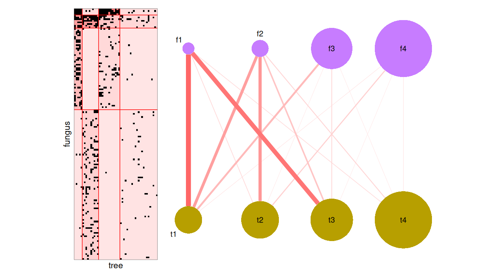

sbm gathers in a single framework the tools to simulate, estimate and represent a variety of stochastic block models (SBM), a family of models that cluster the nodes of a network into blocks sharing the same connectivity patterns.
Supported models
| Network | Function | Estimation engine |
|---|---|---|
| Simple (one set of nodes, directed or not) | estimateSimpleSBM() |
blockmodels |
| Bipartite (two sets of nodes) | estimateBipartiteSBM() |
blockmodels |
| Multipartite (several sets of nodes and networks) | estimateMultipartiteSBM() |
GREMLINS |
| Multiplex (several networks on the same nodes) | estimateMultiplexSBM() |
GREMLINS (independent layers), blockmodels (dependent layers) |
- Emission distributions on the edges: Bernoulli (binary networks), Poisson (counts) and Gaussian (weights).
- Covariates, for simple and bipartite SBM: on the edges, acting on the connectivity, or on the nodes, driving the block memberships.
-
Missing values (
NA) in the networks: the missing dyads are ignored in the inference (see the help pages for the details of each model). - Model selection of the number of blocks with the Integrated Classification Likelihood (ICL).
- Graphics with ggplot2: reordered matrices, expected networks, graphons, mesoscopic views and alluvial plots.
-
Simulation of networks with
sampleSimpleSBM(),sampleBipartiteSBM(),sampleMultipartiteSBM()andsampleMultiplexSBM().
Installation
The stable version is available on CRAN:
install.packages("sbm")The development version can be installed from GitHub:
# install.packages("pak")
pak::pak("GrossSBM/sbm")Example
The data set fungusTreeNetwork records the interactions between 154 fungal species and 51 tree species. A bipartite SBM groups the fungi and the trees into blocks sharing the same interaction patterns, the number of blocks being chosen with the ICL.
library(sbm)
data("fungusTreeNetwork")
fungusTree <- fungusTreeNetwork$fungus_tree
fit <- estimateBipartiteSBM(
fungusTree, model = "bernoulli", dimLabels = c(row = "fungus", col = "tree"),
estimOptions = list(verbosity = 0, plot = FALSE, nbCores = 1)
)
fit$nbBlocks
#> fungus tree
#> 4 4
The vignettes go further: model principles, case studies on simple, bipartite, multipartite and multiplex networks, and covariates on the nodes.
Related packages
- blockmodels: estimation of simple and bipartite SBM (and of dependent multiplex SBM), used by sbm.
- GREMLINS: estimation of multipartite SBM, used by sbm.
- missSBM: SBM for networks with missing data, under various sampling designs (missing at random or not).
- shinySbm: a Shiny application to fit SBM with sbm.
References
- Léger, J.-B. (2016). Blockmodels: A R-package for estimating in Latent Block Model and Stochastic Block Model, with various probability functions, with or without covariates. arXiv:1602.07587.
- Barbillon, P., Donnet, S., Lazega, E. and Bar-Hen, A. (2017). Stochastic block models for multiplex networks: an application to a multilevel network of researchers. Journal of the Royal Statistical Society: Series A, 180(1), 295–314. doi:10.1111/rssa.12193.
- Bar-Hen, A., Barbillon, P. and Donnet, S. (2022). Block models for generalized multipartite networks: Applications in ecology and ethnobiology. Statistical Modelling, 22(4), 273–296. doi:10.1177/1471082X20963254.